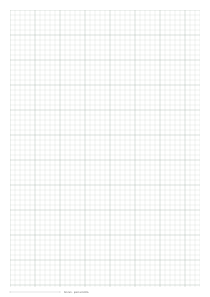
THE PAPERKIND LIBRARY / 23 FREE TEMPLATESA page for
A page for
what comes next.
From the first line of notes to the next good riff. Find a useful sheet, check the preview, and download a real-size PDF.
A4 + US LetterVector PDFsNo account needed
23 useful places to begin
A blank sheet. A fresh start.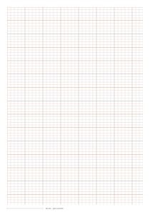
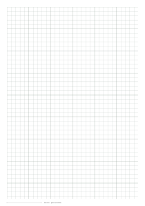
¼ inch / 6.35 mm squares
Quarter-inch graph paper
An inch-based grid for measured plans.
Choose your sheet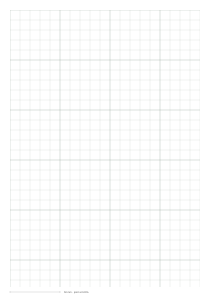
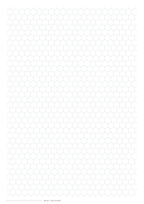
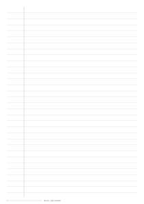
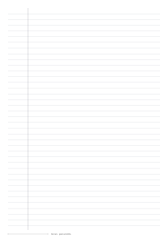

Five-line staves · 2 mm spacing
Music staff paper
A place for the melody in your head.
Choose your sheet

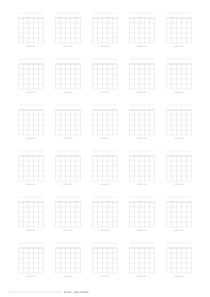
Six strings · five fret spaces
Guitar chord diagram paper
Build a library of your own voicings.
Choose your sheet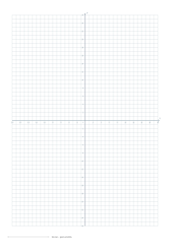
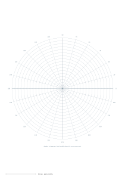
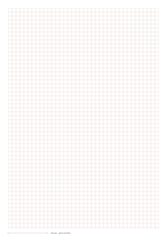
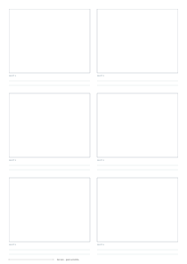
Six frames with caption lines
Storyboard template
Work out the story before the shoot.
Choose your sheet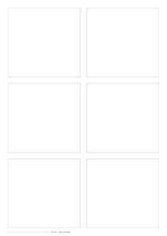
10 mm bands · dashed midline
Handwriting practice paper
Find a steady line, one letter at a time.
Choose your sheet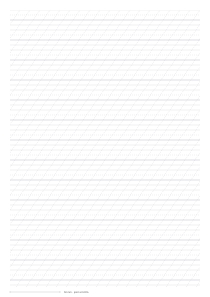
55° slant · 5 mm x-height
Calligraphy practice paper
A consistent rhythm for your letterforms.
Choose your sheet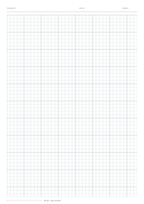
5 mm grid · project heading
Engineering graph paper
Keep calculations and context together.
Choose your sheetA fresh search?
Try a different paper name, or browse all templates.
A LITTLE HELP CHOOSINGThe right structure.
The right structure.
Room to make it yours.
Working with numbers?
Use square graph paper for a flexible scale, coordinate paper for numbered axes, or polar paper for angles and radius.
Explore coordinate paper →Starting a music idea?
Choose five-line staves for notation, six-line TAB for guitar, four-line TAB for bass, or empty chord boxes for voicings.
Explore music paper →Planning a pattern?
Use square cells for cross stitch. For knitting, match rectangular cells to your blocked gauge or paint a motif in the chart maker.
Open the knitting studio →